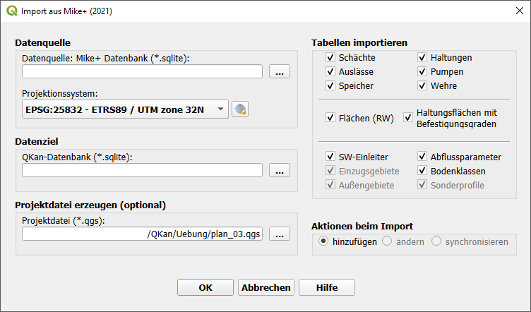

Erstellung von QKan-Plugins
Grundsätzlich entspricht die Erstellung von QKan-Plugins in weiten Teilen der für QGIS empfohlenen Vorgehensweise. Wenn das Plugin als Bestandteil von QKan fungieren soll, sind lediglich einige kleinere Anpassungen und Ergänzungen notwendig. An dieser Stelle wird der Einfachheit halber der gesamte Workflow erläutert.
Vorbereitung des Moduls
Am einfachsten ist es, den Vorlage-Ordner „template“ in das QKan-Module-Verzeichnis .plugins/qkan zu kopieren und diesen dann entsprechend dem gewünschten Modulnamen umzubenennen, wie z. B. das bereits existierende Modul „he8porter“.
Erzeugen von Modul-Icons
Ein Modul benötigt mindestens ein Icon, kann aber auch mehrere verwenden. Diese sollten im Dateityp *.png in der Größe von 32 x 32 oder 64 x 64 Pixeln vorliegen, wobei beinahe beliebige Pixelgrößen verarbeitet werden. Alle Icons eines Moduls müssen mit dem Programm „pyrcc5.exe“ in die Python-Datei resources.py umgewandelt werden. Dazu muss der Pfad zu den Icons in der Datei resource.qrc als relatvier Pfad bezogen auf das Modulverzeichnis eingetragen sein. Da für die Umwandlung einige Voreinstellungen (hierfür ist das Ausführen der Datei „o4w_env.bat“ empfehlenswert) notwendig sind, empfiehlt sich die Verwendung der durch das ISCE erstellten Batch-Datei „make resource.bat“.
Anpassungen in den Moduldateien (*.py)
- Folgende Bezeichnungen müssen angepasst werden:
„template“ durch den gewählten Modulnamen
Icon-Bezeichnungen. Bei mehreren Icons müssen auch mehrere Aufrufe von QKan.instance.add_action() erfolgen
In der Methode unload(self) müssen alle Dialoge wieder geschlossen werden
Help-Schaltfläche anbinden
Die Schaltfläche Methode application_dialog.click_help()
Mit der Funktion Import aus Mike+ kann eine Mike+ Datenbank umgeschrieben werden in eine QKan-Datenbank.
{kind=link}
Datenquelle
In diesem Bereich wird die mit Mike+ erstellte Quelldatenbank (Endung .sqlite) ausgewählt. Darunter muss das Projektionssystem ausgewählt werden, in dem die Daten in der Datenquelle gespeichert sind. In dem gleichen Projektionssystem sollte das QKan-Projekt aufgebaut werden, sodass diese identisch sind.
Datenziel
Hier wird das Datenziel - die Sqlite-Datenbank - ausgewählt. Ist noch keine Zieldatenbank vorhanden, kann diese hier erstellt werden.